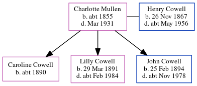

Charlotte Cowell (née Mullen) c1855 - 1931
[ Home ] | [ Calendar ] | [ Surnames Index ] | [ Census Index ] | [ Family History ]Charlotte Mullen, the wife of Henry John Cowell (the first cousin three-times-removed on the mother's side of Nigel Horne), was born in Hollingbourne, Kent, England c. 18551,2,3,4 and married Henry (a shepherd with whom she had 3 children: Caroline Grace, Lilly Clara and John William) in Malling, Kent, England around May 18905 (Apr/May/Jun).
During her life, she was living on Lunsford Lane, East Malling, Kent on Apr 5, 1891; in Larkfield, Kent, England on Mar 31, 19017; at 3 Illogan Terrace in Larkfield on Apr 2, 19113; and at Illogan Terrace, Larkfield, East Malling in Malling in 19216 and on Jun 19, 19219.
She died in Mar 1931 in Malling4.
Children
- Caroline Grace was born c. 1890
- Lilly Clara was born on Mar 29, 1891
- John William was born on Feb 25, 1894
Citations
- 1891 England Census Online publication - Provo, UT, USA: The Generations Network, Inc., 2005.Original data - Census Returns of England and Wales, 1891. Kew, Surrey, England: The National Archives of the UK (TNA): Public Record Office (PRO), 1891. Data imaged from The National
- 1901 England Census Online publication - Provo, UT, USA: The Generations Network, Inc., 2005.Original data - Census Returns of England and Wales, 1901. Kew, Surrey, England: The National Archives of the UK (TNA): Public Record Office (PRO), 1901. Data imaged from the National
- 1911 England Census Online publication - Provo, UT, USA: Ancestry.com Operations, Inc., 2011.Original data - Census Returns of England and Wales, 1911. Kew, Surrey, England: The National Archives of the UK (TNA), 1911. Data imaged from the National Archives, London, England. (Marital Status: MarriedRelation to Head of House: Wife)
- England & Wales, Death Index: 1984-2005 Online publication - Provo, UT, USA: The Generations Network, Inc., 2007.Original data - General Register Office. England and Wales Civil Registration Indexes. London, England: General Register Office. © Crown copyright. Published by permission of the Cont
- 1911 England Census Online publication - Provo, UT, USA: Ancestry.com Operations, Inc., 2011.Original data - Census Returns of England and Wales, 1911. Kew, Surrey, England: The National Archives of the UK (TNA), 1911. Data imaged from the National Archives, London, England.
- 1921 Census Of England & Wales - Findmypast
- 1901 England, Wales & Scotland Census - Findmypast (was age 45 and the wife of the head of the household)
- 1911 Census for England & Wales - Findmypast (was age 56 and the wife of the head of the household)
- 1921 Census Of England & Wales - Findmypast (was age 67 and the wife of the head of the household)
Media
1891 England, Wales & Scotland Census - GBC/1891/0005472920
Family Tree
Generated by ged2site. Last updated on Jun 11, 2024